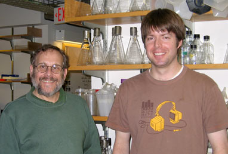

News Archives : 2007 : A Kinase Pathway Required for Neuronal Polarity
by Brendan Lilley and Joshua Sanes
May 4, 2007
|  Authors Josh Sanes (left) and Brendan Lilley |
The Sanes lab became interested in neuronal polarization while studying the SAD-A and SAD-B kinases, which were found to be essential for neuronal polarization in vivo. In an effort to understand the regulation of SAD kinases, they looked to LKB1, a kinase mutated in the cancer predisposition disorder, Peutz-Jehgers syndrome. LKB1 regulates epithelial cell polarity in mammals while its orthologs in worm and fly are essential for establishing polarity of the embryo. Furthermore, LKB1 was known to activate multiple kinases of a subfamily of which SAD-A and -B are members. The Sanes and Polleux labs teamed up to characterize the role of LKB1 in neuronal polarity and to investigate a possible connection to SAD kinases. Using a conditional gene inactivation approach that restricted LKB1 loss of function to the developing cortex, they demonstrated that LKB1 is required for the formation of axon tracts that connect the cortex to other structures in the central nervous system. Conversely, when extra LKB1 was supplied to neurons, they grew multiple axons.
Further studies showed that LKB1 is central to a pathway that leads to appropriate polarization of brain neurons. Poo and colleagues provide evidence that the choice of which process becomes an axon is influenced by factors secreted from neighboring cells. Some of these factors, including one called BDNF, activate yet another kinase called TrkB. TrkB in turn leads to activation of a kinase called PKA, which then activates LKB1. LKB1 then phosphorylates and activates SAD kinases, which were already implicated in polarization in previous work from the Sanes lab. Finally, SAD kinases phosphorylate proteins that give axons and dendrites their distinct characters.
Together, these studies establish LKB1 and SAD kinases as central players in a pathway of at least 5 kinases. This multi-kinase signaling pathway regulates the polarization of cortical neurons in vivo, among the earliest steps in the formation of neural circuits. The complexity of this kinase cascade may provide a way for neurons to integrate multiple signals, thereby achieving fine control over a critical aspect of brain development. Does this same pathway regulate polarity in all neurons or just those of the cortex? That is what Lilley and Sanes are asking now.